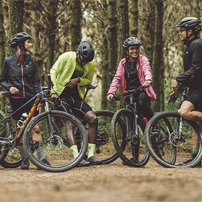
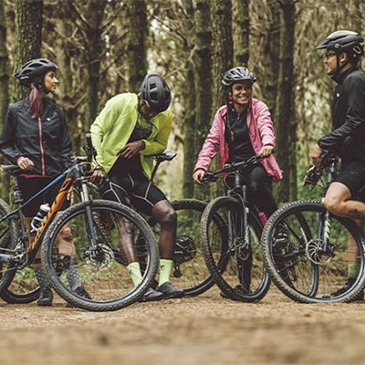

Versa lança a gravel "topa tudo" !
O novo lançamento da marca Versa vem para agradar tanto gregos quanto troianos: a gravel Versa Comp 2024. Com design arrojado e peças de primeira qualidade, a nova bike vem para enfrentrar seja o quente asfalto das BR's ou a lama do interior do Brasil. Confira mais o produto, clicando aqui.
Descrição da Bike:
Você pode ter uma bike para ir trabalhar, outra para pedalar na estrada e outra para suas aventuras off-road, ou você pode ter uma Sense Versa Comp. Com geometria Gravel polivalente, tubos de alumínio 6061 hidroformado, caixa cônica, padrão de freios flat mount e cabeamento interno, a Versa Comp chega com detalhes pra lá de especiais: como as bolsas de quadro e guidão super práticas e estilosas, feitas pela Draisiana.
Já pensou em pegar sua bike e viajar? Conheça o Cicloturismo!
Cicloturismo é uma modalidade de turismo em que a bicicleta é o principal meio de transporte. É uma atividade que pode ser praticada sozinha ou acompanhada, permitindo o acesso a locais que, de outra forma, não seriam visitados. O cicloturismo é considerado um segmento do turismo sustentável. O termo pode ser usado para se referir à viagem em si ou ao turismo de aventura e/ou ecoturismo. Algumas características do cicloturismo são:
- Exige preparo físico e equipamentos adequados para longas distâncias.
- O objetivo é o prazer, o autoconhecimento e o desafio dos limites, e não bater recordes ou chegar mais rápido.
- Pode proporcionar introspecção, pois a cadência do pedalar é rítmica e constante.
O cicloturismo surgiu no final do século XIX e início do século XX, principalmente na Europa, onde as pessoas começaram a usar a bicicleta para explorar novos lugares e fazer viagens recreativas.
Prova Nacional de Mountain Bike será realizada no início de 2025!
Inscreva-se para a próxima etapa que ocorrerá no início de 2025!
Confira as imagens da última prova realizada em setembro.
 
